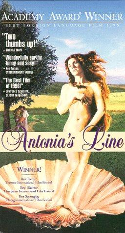

Season 39 (2004-2005)
-
 September 12, 2004Directed by Leo McCarey; Starring The Marx Brothers, Groucho Marx, Harpo Marx, Chico Marx
September 12, 2004Directed by Leo McCarey; Starring The Marx Brothers, Groucho Marx, Harpo Marx, Chico Marx
Duck Soup
USA, 1933, 68 min, B&W, Not Rated
In this madcap Marx Brothers comedy, Groucho Marx and Margaret Dumont star as Rufus T. Firefly, the would-be dictator of a destitute European duchy, and Mrs. Teasdale, a wealthy dowager whom Firefly woos for her money. Cinebooks' Motion Picture Guide gives this comic masterpiece five stars (its highest rating) and writes, "Duck Soup is perhaps the best, and funniest, depiction of the absurdities of war ever committed to celluloid. The Marxes' depiction of two-bit dictators destroying their own countries was a slap at the rising fascists, so much so that Mussolini considered it a direct insult and banned the film in Italy." British film critic Patrick McCray adds, "As an absurdist essay on politics and warfare, Duck Soup can stand alongside (or even above) the works of Beckett and Ionesco."
Read Roger Ebert's review of Duck Soup at Great Movies. -
 October 10, 2004Directed by Roman Polanski; Starring Catherine Deneuve, Ian Hendry, John Fraser, Yvonne Furneaux
October 10, 2004Directed by Roman Polanski; Starring Catherine Deneuve, Ian Hendry, John Fraser, Yvonne Furneaux
Repulsion
UK, 1965, 105 min, B&W, Not Rated
American movie critic Leonard Maltin awards Repulsion four stars (his highest rating) and calls the film an "excellent psychological shocker depicting [the] mental deterioration of [a] sexually repressed girl left alone in her sister's apartment for several days." Maltin claims, "[Repulsion] hasn't lost a bit of its impact; [it] will leave you feeling uneasy for days afterward."
-
 November 14, 2004Directed by Richard Loncraine; Starring Ian McKellen, Annette Bening, Jim Broadbent
November 14, 2004Directed by Richard Loncraine; Starring Ian McKellen, Annette Bening, Jim Broadbent
Richard III
UK/USA, 1995, 110 min, Color, R
American critic Roger Ebert says, "The movie is set in the kind of England that might have resulted if Edward VIII, instead of abdicating, had been able to indulge his fascist fantasies, summon Oswald Mosley to lead a government, and lead his people into an accommodation with Hitler." Cinebooks adds, "From its explosive intro to its surprisingly giddy finale (think White Heat), this glossy adaptation is arch, nasty fun. Based on Ian McKellen's acclaimed [1990] stage production, the screenplay updates the story to the 1930s, re-inventing Richard III (McKellen) as a homegrown Nazi who charms and slaughters his way to the British throne."
Read Roger Ebert's review of Richard III at Great Movies. -
 December 12, 2004Directed by Tamara Jenkins; Starring Natasha Lyonne, Alan Arkin, Bryna Weiss, Marisa Tomei
December 12, 2004Directed by Tamara Jenkins; Starring Natasha Lyonne, Alan Arkin, Bryna Weiss, Marisa Tomei
Slums of Beverly Hills
USA, 1998, 91 min, Color, R
"Uneven but filled with flashes of painful insight into the pitfalls awaiting adolescent girls — particularly girls adrift in floundering families — this darkly comic look at life on the fringes of California's most glamorous ZIP code boasts a phenomenal performance from youthful Natasha Lyonne," claims Cinebooks. Roger Ebert adds, "Slums of Beverly Hills [is] about a poor Jewish family [which] moves by night from one sleazy apartment to another, jumping the rent but always staying within Beverly Hills to take advantage of the educational system. Every move brings them into range of a fresh supply of wacky supporting characters."
-
 January 9, 2005Directed by Bert Stern; Starring Louis Armstrong, Mahalia Jackson, Gerry Mulligan, Dinah Washington, Anita O'Day, Big Maybelle, Thelonious Monk
January 9, 2005Directed by Bert Stern; Starring Louis Armstrong, Mahalia Jackson, Gerry Mulligan, Dinah Washington, Anita O'Day, Big Maybelle, Thelonious Monk
Jazz on a Summer's Day
USA, 1959, 85 min, Color, Not Rated
Named to the National Film Registry in 1999, Jazz on a Summer's Day is a "candid, enjoyable filmed record of the 1958 Newport Jazz Festival [and] a must for jazz aficionados," declares Leonard Maltin. Pauline Kael adds, "Bert Stern's camera style infectiously conveys the festival's happy, lazy-day atmosphere; the America's Cup observation trials, which are also going on, are an unstressed part of the film's visual texture. In the evening, when Mahalia Jackson, with her majestic chest tones, sings the word 'soul,' she defines it for all time. This is one of the most pleasurable of all concert films."
-
February 13, 2005Directed by Andrew L. Stone; Starring Lena Horne, Bill Robinson, Cab Calloway and His Cotton Club Orchestra
Stormy Weather
USA, 1943, 78 min, B&W, Not Rated
Stormy Weather, which was named to the National Film Registry in 2001, is a fictionalized show-business biography of a premier song-and-dance man played by Bill "Bojangles" Robinson. Hal Erickson of All Movie Guide writes, "Built around the premise of a Big Stage Show, Stormy Weather affords rare 'mainstream' leading roles to some of the era's greatest African-American entertainers: Lena Horne, [Robinson], Dooley Wilson, Cab Calloway, Katherine Dunham, Fats Waller, and the Nicholas Brothers. The thinnish plotline — dancer Robinson has an on-again/off-again romance with Horne — is simply an excuse for fourteen lively, well-staged performances that include Horne's memorable rendition of the title song, artfully staged by director Andrew L. Stone."
-
 March 13, 2005Directed by Phillip Borsos; Starring Richard Farnsworth, Jackie Burroughs, Ken Pogue, Wayne Robson
March 13, 2005Directed by Phillip Borsos; Starring Richard Farnsworth, Jackie Burroughs, Ken Pogue, Wayne Robson
The Grey Fox
Canada, 1982, 110 min, Color, PG
Pauline Kael says Phillip Borsos' first feature film is "The [true] story of a legendary gentleman bandit, Bill Miner (Richard Farnsworth), who served 33 years in San Quentin for robbing stagecoaches and then, when he got out, took up robbing trains. There may never have been photographs of trains more exultant than the shots here of the old Northern Pacific steaming through mountain forests." Kael also praises British cinematographer Frank Tidy's spectacular camerawork. Cinebooks writes, "An ex-stuntman and character actor who was suggested for the part by Francis Ford Coppola, Farnsworth is dignified and charismatic in his first starring role."
-
 April 10, 2005Directed by François Truffaut; Starring Jeanne Moreau, Oskar Werner, Henri Serre, Vanna Urbino
April 10, 2005Directed by François Truffaut; Starring Jeanne Moreau, Oskar Werner, Henri Serre, Vanna Urbino
Jules and Jim (Jules et Jim)
France, 1962, 105 min, B&W, Not Rated, French w/subtitles
Leonard Maltin gives four stars to "Truffaut's memorable tale of three people in love, and how the years affect their interrelationships," and calls Jules and Jim "a film of rare beauty and charm." New York Times critic Bosley Crowther says, "Taking his cue from a novel by Henri-Pierre Roché, who was in his seventies when he wrote it and therefore should have known whereof he wrote, Truffaut is endeavoring to express (and presumably let us know) what it's like when two happy fellows fall in love with one whimsical girl. To put it quickly and crisply, it is charming, exciting, and sad."
Read Roger Ebert's review of Jules and Jim at Great Movies. -

May 8, 2005Directed by Marleen Gorris; Starring Willeke van Ammelrooy, Els Dottermans, Dora van der Groen, Veerle van Overloop
Antonia's Line (Antonia)
Netherlands/Belgium/UK/France, 1995, 102 min, Color, R, Dutch w/subtitles
Antonia's Line, which won the 1996 Oscar for Best Foreign-Language Film, is a "disarmingly unpredictable comedy-drama [that] is a treat from start to finish," says Leonard Maltin. He adds, "[A] spirited woman returns to her provincial Dutch village after WWII and takes up residence there with her daughter. Then, over a span of years, she raises not only her own child but an extended family which comes under the shelter (and aura) of this unusual woman who defies convention." New York Times reviewer Janet Maslin calls Antonia's Line "a work of magical feminism."
-
June 12, 2005Directed by Alain Berliner; Starring Michèle Laroque, Jean-Philippe Écoffey, Hélène Vincent, Georges Du Fresne
My Life in Pink (Ma Vie En Rose)
Belgium/France/UK, 1997, 88 min, Color, R, French w/subtitles
New York Times critic Stephen Holden says, Ma Vie en Rose is "the story, told with irresistible good humor and minimal psychologizing, of the far-reaching consequences of [7-year-old] Ludovic's [childhood transvestism]. By the end of the film, Ludovic's fondness for dresses and lipstick and his stubbornly-held dream of one day marrying the little boy next door has nearly torn apart his parents' marriage, cost his father his job, and forced his family to move out of a buttoned-down French suburb where they have become pariahs." This film won 1998 Golden Globe for Best Foreign-Language Film.
-
 July 10, 2005Directed by Douglas Trumbull; Starring Bruce Dern, Cliff Potts, Ron Rifkin, Jesse Vint
July 10, 2005Directed by Douglas Trumbull; Starring Bruce Dern, Cliff Potts, Ron Rifkin, Jesse Vint
Silent Running
USA, 1972, 89 min, Color, Not Rated
Douglas Trumbull's directorial debut, which was nominated for the 1973 Hugo Award for Best Dramatic Presentation, is a classic science-fiction film. Hal Erickson of All Movie Guide says, "Bruce Dern stars as the caretaker of a greenhouse located on a group of space stations that are sent into orbit. The Earth has been stripped clean of foliage, and the greenhouse contains the last remaining greenery from the planet. Dern's staff includes three human beings and a brace of endearing robots named Huey, Dewey, and Louie. When word arrives from the Powers That Be that the greenhouse is to be destroyed (the space station is more valuable to man when hauling cargo and not 'preserving the ecology of the universe'), Dern decides to ignore the order."
-
August 14, 2005Directed by Yimou Zhang; Starring Minzhi Wei, Huike Zhang, Zhenda Tian, Enman Gao
Not One Less (Yi ge dou bu neng shao)
China, 1999, 106 min, Color, G, Mandarin w/subtitles
A. O. Scott of The New York Times writes, "At the center of Not One Less is Wei (Wei Minzhi), a 13-year-old primary school graduate who has been pressed into service as a substitute teacher in the Shuiquan Primary School. She stands a few inches taller than her charges, and it is hard not to hear more than a trace of irony in their voices when they address her, according to the dictates of courtesy and custom, as 'Teacher Wei'. Her main qualifications, other than the fact that no one else wants the job, are an innate, unsmiling bossiness, neat handwriting, and her ability to perform, in a tentative, quavering voice, one song about Chairman Mao." Not One Less won the Golden Lion and three other awards at the 1999 Venice Film Festival.